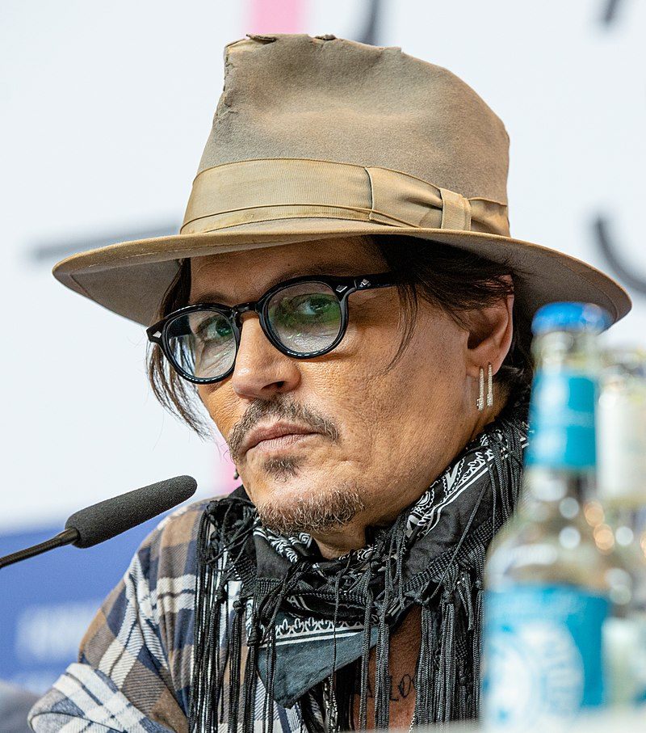

Johnny Depp

-
U lind në:
John Christopher Depp Qershor, 1963 (59 vjeç) a ,
Owensboro, Kentucky U.S
- Punësimi Aktor, skenarist, drejtor, producent, muzikiant
- Vite aktiviteti: nga 1984 - ende present
-
Bashkëshort/ët Sherilyn Fenn (1985 - 1988), Winona Ryder (1989 - 1993), Kate Moss (1994 - 1998), Vanessa Paradis (1998- prezent)
- Fëmijë: Lily-Rose Melody Depp (lindur 1999), John Christopher "Jack" Depp III (lindur 2002)
John Christopher "Johnny" Depp II (lindi më 9 qershor, 1963) është një aktor dhe muzikant amerikan.
Ai ka fituar çmimin Golden Globe Award dhe Screen ActorsGuild për aktorin më të mirë "Best Actor".
Depp u bë i rëndësishëm në serin televizive 1980 21 Jump Street, duke u bërë një idoll i të rinjëve. Duke u kthyer në film, ai ka luajtur karakterin kryesor tek Edward Scissorhands (1990), dhe më vonë gjeti suksesin në filmat si Sleepy Hollow (1999), seria e filmave Pirates of the Caribbean (2003–prezent), Charlie and the Chocolate Factory (2005), dhe Rango (2011).
Ai ka bashkëpunuar me drejtorin dhe mikun Tim Burton në shtatë filma, duke përfshirë edhe Sweeney Todd: The Demon Barber of Fleet Street (2007) dhe Alice in Wonderland (2010).
Depp ka fituar mirënjohje për portretizimin e tij të njerëzve të tillë si Edward D. Wood, Jr., në Ed Wood, Joseph D. Pistone në Donnie Brasco, Hunter S. Thompson në Fear and Loathing in Las Vegas, George Jung në Blow, dhe grabitësin e bankave John Dillinger në filmin e Michael Mann Public Enemies. Filmat ku është paraqitur Depp kanë arkëtuar mbi $3.1 billion në në arkë në SHBA dhe dhe mbi $7.6 billion në mbarë botën [2]. Ai ka qenë i nominuar për çmimet kryesore shumë herë, duke fituar çmimin e aktorit më të mirë "Best Actor Awards" prej Golden Globes për Sweeney Todd: The Demon Barber of Fleet Street dhe prej Screen Actors Guild për Pirates of the Caribbean: The Curse of the Black Pearl. Ai gjithashtu ka mori statusin e simbol i seksit në kinemanë amerikane, duke u emëruar dy herë si Sexiest man alive nga revista People .Pasi u nda nga Miranda kerr, Johnny pesoi nje goditje ne tru. [3] në 2003 dhe 2009.
Jeta e hershme
Fëmijëria
Depp ka lindur në Owensboro, Kentucky, i biri i John Christopher Depp, Sr, një inxhinier civil, dhe gruaja e tij, ish Betty Sue Wells, një kameriere [4]. Ai ka një vëlla, Daniel, i cili është një novelist, dhe dy motra, Christie (tani menaxhere e tij personale) dhe Debbie. Familja Depp në Shtetet e Bashkuara filloi me një emigrant kalvinist francez, Pierre Deppe apo Dieppe, i cili u vendos në Virginia rreth 1700 [5], pjesë e një kolonie të refugjatëve të vendosur mbi lumin "James". Aktori ka pandehur se ai është pjesë e Amerikan vendas, duke thënë në 2011,
"Unë mendoj, unë kam ca amerikan vendas [në mua] diku poshtë vijës. Gjyshja ime e madhe, ishte shumë pak amerikane vendase, ajo u rrit Cherokee apo ndoshta Indian Creek. Ka kuptim në aspektin e vijnë nga Kentucky, e cila është plot me Cherokee dhe Creek" . Kohët e fundit në mes të trashëgimtarëve Depp dhe Mbretëresha Elizabeth II u zbulua një lidhje, ka mundësisht duke e bërë atë kushëririn e saj të njëzetë [7].
Prindërit e tij u divorcuan kur ai ishte një adoleshent dhe nëna e tij u martua, si burri i saj i dytë, Robert Palmer (vdiq 2000), të cilin Depp e quajti "një frymëzim për mua
Vitet 1980
Me kitaren qe e kishte dhurate nga mamaja kur mbushi 12, Depp filloi te luante ne grupe te ndryshme muzikore.Nje vit pasi prinderit ishin divorcuar, Depp braktisi shkollen per tu bere muzikant.[9] Ai u perpoq te kthehej ne shkolle dy jave me vone por drejtori I tha te vazhdonte enderren e tij .Ne 24 dhjetor , 1983, Depp u martua me Lori Anne Allison, Gjate marteses Depp's, gruaja e tij punonte me kozmetike kurse ai punonte ne pune te ndryshme.Gruaja e tij e prezantoi me aktorin Nicolas Cage, qe e keshilloi Depp te ndiqte karieren e aktrimit[9] Depp dhe gruaja e tij u divorcuan ne 1985.
Filmografia
| Viti |
Titulli |
Rroli |
Buxheti |
Fitimet |
| 1984 |
A Nightmare on Elm Street |
Glen Lantz |
$1.8 million |
$25,504,513 |
| 2001 |
The Man Who Cried |
Cesar |
$1,440,840 |
$11,790,840 |
| 2003 |
Once Upon a Time in Mexico |
Sheldon Sands |
$29 million |
$98,185,582 |
| 2006 |
Pirates of the Caribbean: Dead Man's Chest |
Captain Jack Sparrow |
$140 million |
$654,264,015 |
| 2010 |
The Tourist |
Frank Tupelo/Alexander Pearce |
$200 million |
$1,024,299,904 |
| 2011 |
Pirates of the Caribbean: On Stranger Tides |
Captain Jack Sparrow |
$250 million |
$1,032,828,392 |
Ky ishte punumi pare me HTML nga
Mand Vishay
me daten 16.04.2010
( 06.12.2022 )
Per informacion shtes, ndonje kerkes apo pyetje mundeni te na kontaktoni:
Mand Vishay
Email:
vmand2022@gmail.com
Tel:
+41-77-90-74-700
Address
Chemin du Devin 74
1012 Lausanne, Switzerland
 mandwishay
mandwishay